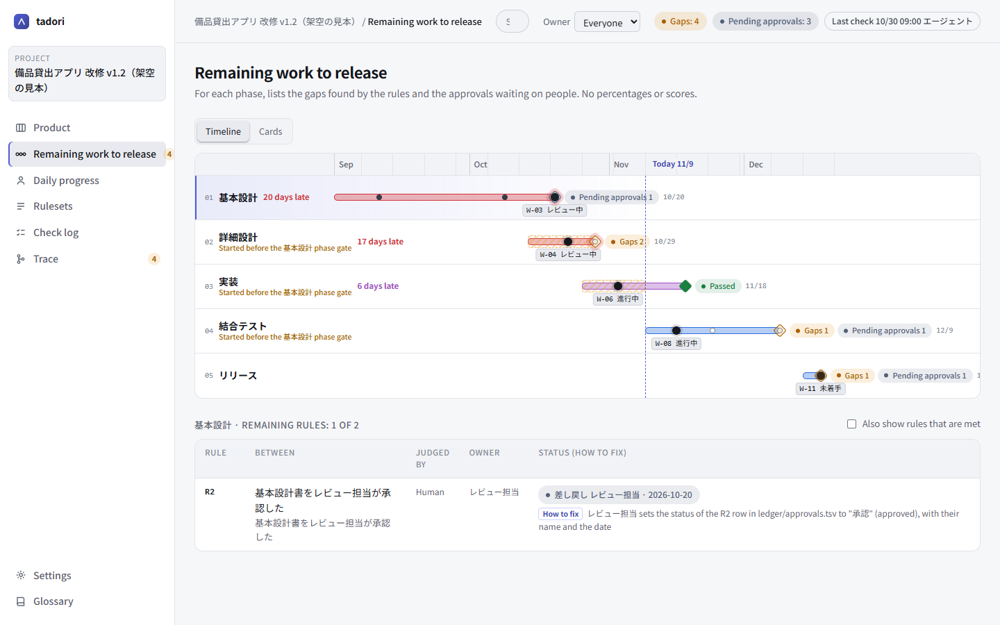

Find missing post-change impact, down to the line number
In a revision project, unless each detailed design section says whether this revision changes it or not, the scope of implementation and testing gets blurry. tadori lists the sections where this isn't written, and shows exactly which column of which line to fill in.
- Rule used
- R4 (detailed design), column is filled: the “post-change impact” column of detailed design sections (DD)
- Gap found
- DD-2.3 “Lending limit check” has an empty post-change impact
- Owner and fix
- The designer fills in the “post-change impact” column on the DD-2.3 row (line 6) of ledger/items.tsv
1. Write one rule
In the ruleset for the detailed design phase (dd), add a rule saying “detailed design sections have the change column filled”. The kind of check is filled (a column is filled).
id phase kind from to field only owner label
R4 dd filled DD change Designer Detailed design section states its post-change impact (changes / unchanged / undecided)2. The ledger holds only the section and what it is based on
The ledger (ledger/items.tsv) holds each section's ID, title, where the original lives, and the basic design chapter it is based on. The design document's content is not copied.
| id | title | source | refs | change |
|---|---|---|---|---|
| DD-2.3 | Lending limit check | docs/detail-design.md §2.3 | BD-2 | empty |
| DD-3.1 | Handling of return due dates | docs/detail-design.md §3.1 | BD-3 | unchanged |
| DD-3.2 | Refusing loans while overdue | docs/detail-design.md §3.2 | BD-3 | changes |
3. See the owner and the fix on the remaining work screen
Select the detailed design phase and DD-2.3 shows up as an R4 gap, along with the owner (the designer) and which column of which line of which file to fill in to close it. The md icon opens that row in md-business.

4. Check only the sections that change in the next phase
Sections whose post-change impact is “changes” should be referenced from a commit in the implementation phase. The rule's only column narrows the target to the sections that change. tadori won't demand commits for unchanged sections and produce gaps that exist only for show.
R6 impl covered DD COMMIT change=changes Developer Detailed design sections that change are referenced from a commit5. Fix it, then check again
When the designer writes “changes” (or another value) for DD-2.3 and saves, the screen redraws on the spot. Running tadori check --log records the result in the check log (who, what, when, where, why, how).
Rows that were gaps in the previous check are marked “resolved” on the trace screen. Confirming that it's fixed is up to a person.